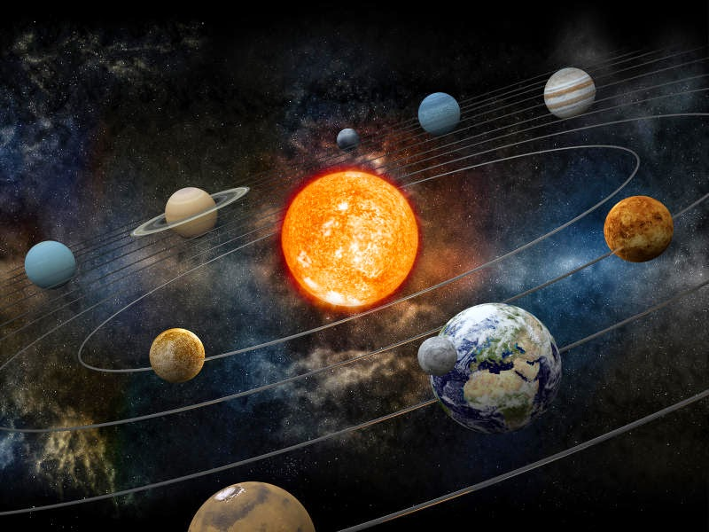

Introduction
Space the final frontier...this is a phrase that is commonly mentioned or thought of when we think about outer space. Our Solar System is filled with amazing and spectacular bodies. These bodies range from the sun to planets to asteroids to stars.
 If you were to ask someone ten years ago, what our solar system consisted of, they would probably refer to nine planets and a sun. Now, however you would get a different answer. There are only eight planets and a sun. The planets in order traveling away from the sun are Mercury, Venus, Earth, Mars, Jupiter, Saturn, Uranus, and Neptune.
The planet that used to be the ninth is called Pluto. Pluto was declassed as a planet in August of 2006, because it does not fit the criteria of a planet. Instead it is now classified as a dwarf planet. The planets are divided into two groups. The inner solar system is devised of the first four planets. Each of these planets has a rocky solid surface. The second half of the solar system consists of the last four planets. These four are known as the Gas Giants. They do not have a solid surface. These two groups are also divided by an actual physical body, the Asteroid Belt.
Along with the planets, sun and asteroids, our solar system contains much, much more. We have comets, meteorites, moons, gas clouds, and even space debris. Our solar system is extremely large. One cannot truly grasp the pure massiveness of our solar system. The estimated diameter of our solar system is 11.65 TRILLION miles.
As you browse this web site, you will find information on many of the objects that are in our solar system. There is also a page with links to more in depth discussion about our solar system and deep space.